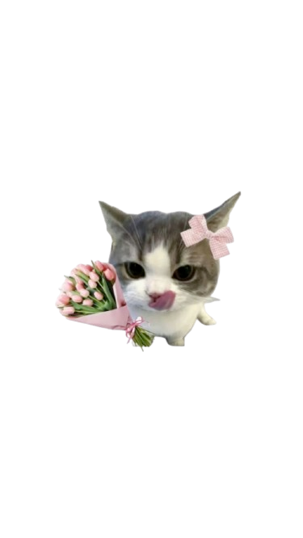

⏸ PAUSED
👋 Lambaian terdeteksi!
👋 Mau bikin intro perkenalan?
Loading...
Tunjukkan tangan ke kamera 👋
Memuat model...

😸
—
Riwayat emosi
Belum ada...
Confidence per emosi
⭐
Challenge Mode
Tunjukkan gesture yang diminta dalam 4 detik. Punya 3 nyawa — jaga mereka!
❤️ ❤️ ❤️